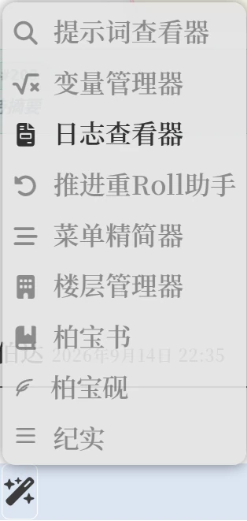
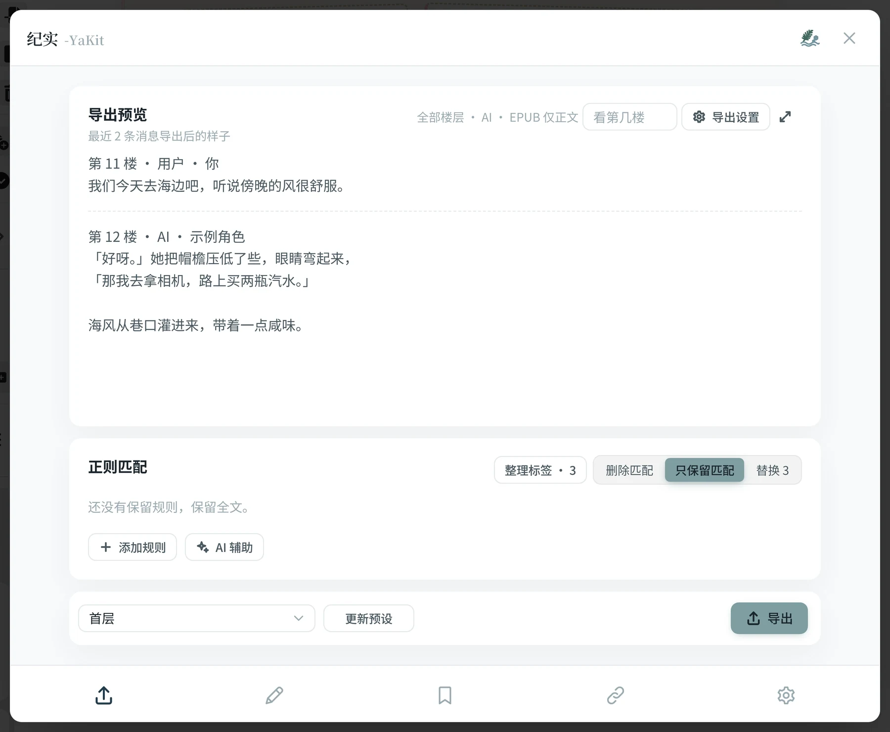
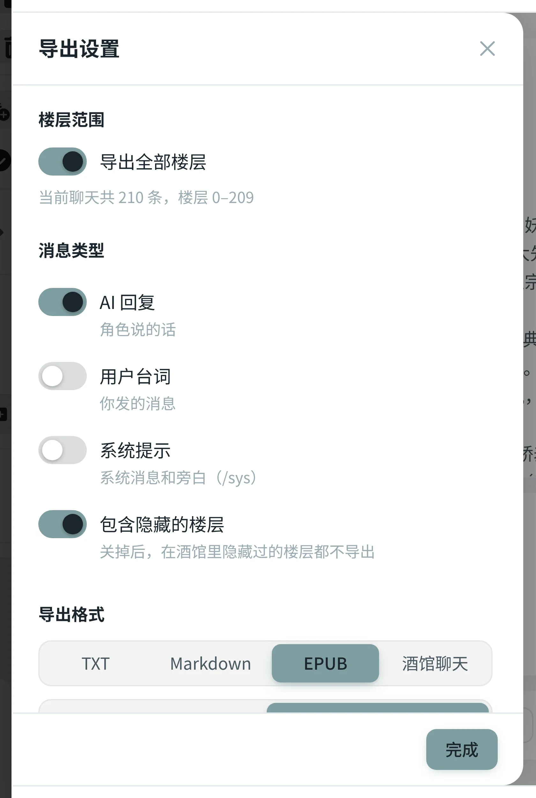
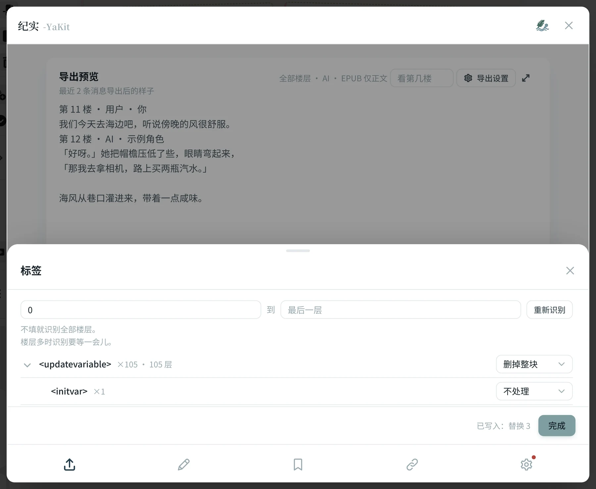
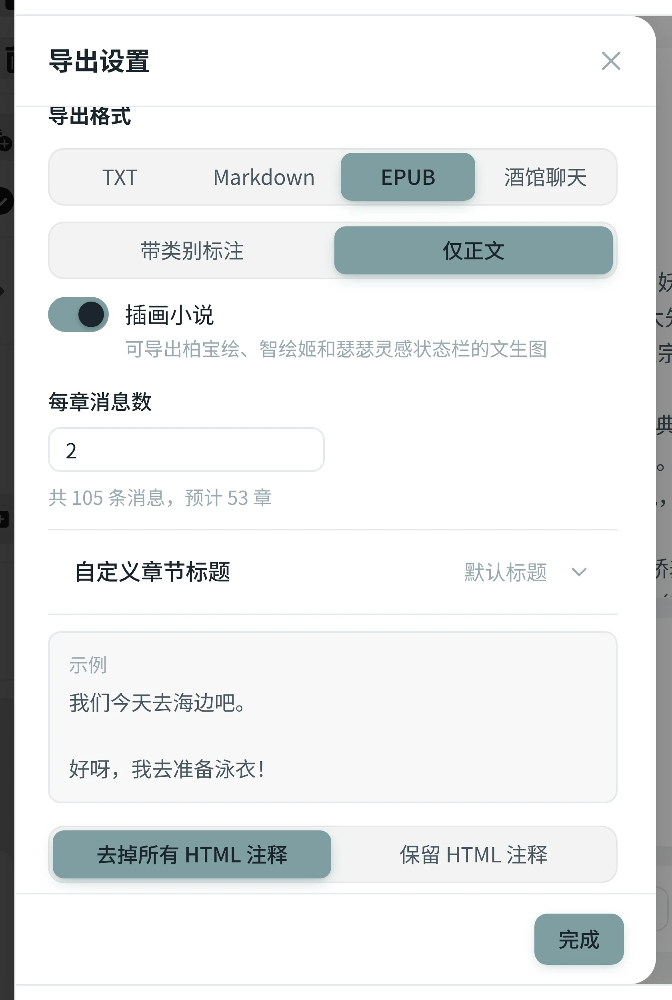
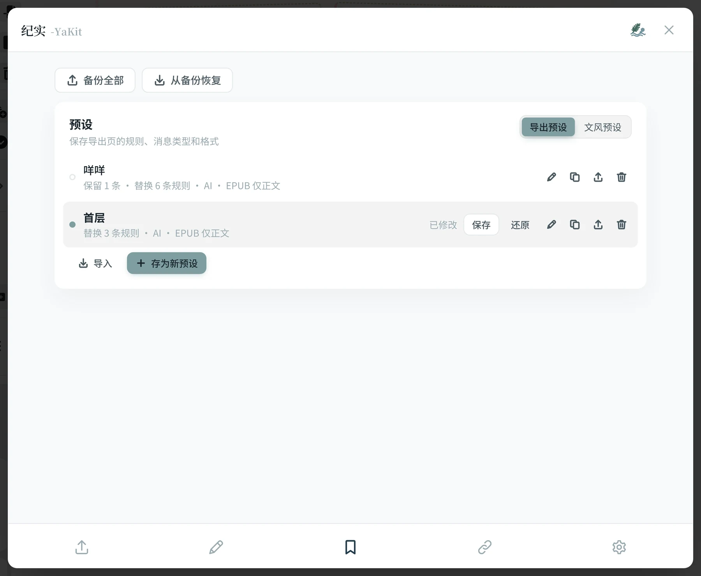
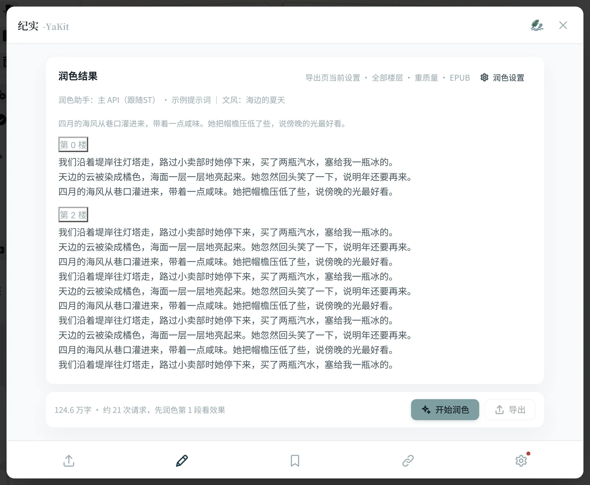
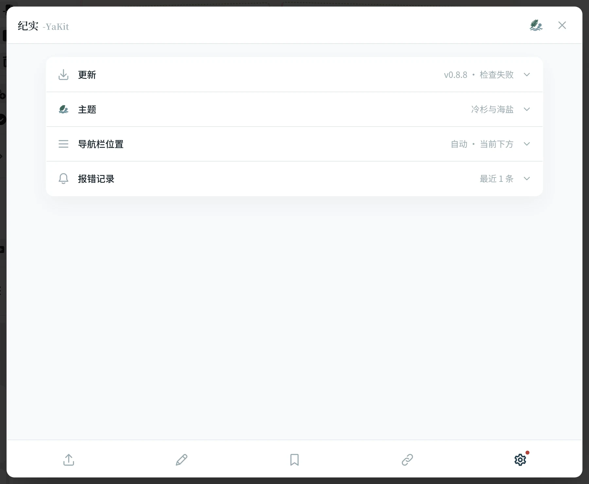
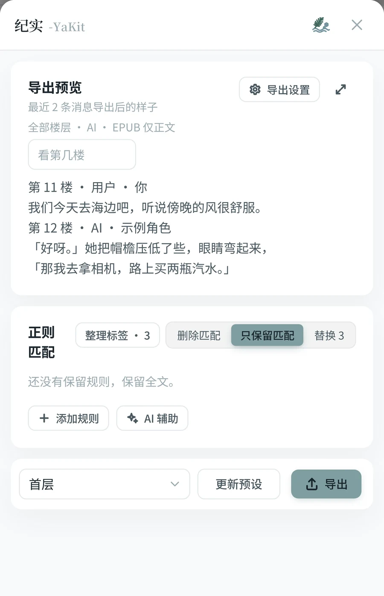

1
装好并打开它
做完你会看到：一个写着「纪实 -YaKit」的面板
- 打开酒馆的扩展面板，点「安装扩展」。
- 把仓库地址粘进去：https://github.com/git-yafaya/ST-YaKit-chat装完刷新一下酒馆页面。
- 在扩展设置里确认「纪实」是启用状态。
- 打开一段你想导出的聊天。没打开聊天的话，面板里会提示「先在酒馆里打开一个聊天」。
- 点输入框左边的魔法棒按钮，在菜单里选「纪实」。

魔法棒菜单的最下面就是入口。
导出不需要任何配置。只有后面「让 AI 帮忙写规则」和「润色」才需要能用的 API。
2
导出第一份文件
做完你会得到：一个下载好的 TXT 文件
面板打开后就停在「文本导出」页。上面那块导出预览，显示的是最近两条消息导出之后的样子——不是酒馆里的原文，而是清洗完的结果。

上面是预览，中间是规则，右下角是导出。
- 点预览右上角的「导出设置」，打开左边的抽屉。
- 楼层范围：默认导出全部楼层。只想要其中一段，就关掉开关填起止楼层（楼层从 0 开始数）。
- 消息类型：AI 回复、用户台词、系统提示，至少选一种。
- 导出格式：先选 TXT 试试，再选「带类别标注」还是「仅正文」，下面的小示例会告诉你两者的区别。
- 点抽屉底部的「完成」，再点面板右下角的「导出」。成功会提示「已导出 N 条消息」，浏览器开始下载。

导出设置抽屉，从上往下填就行。
3
把状态栏、思维链清掉
做完你会得到：预览里只剩正文，导出的文件干干净净
聊天里常常混着状态栏、AI 自己打的草稿（思维链）、插件留下的标记。这些东西都包在标签里，比如 <thinking>…</thinking>。纪实能把它们找出来，让你一个个决定怎么处理。
- 在「正则匹配」那一行点「整理标签」。
- 等它识别完（楼层多会慢一点），下面会列出聊天里所有的标签，以及各出现了多少次。
- 给每个标签右边选一个处理方式：
删掉整块＝标签和里面的内容一起删（状态栏、思维链用这个）；只删标签＝只去掉尖括号，里面的文字留下；只要这段＝只保留这个标签里的内容；不处理＝原样留着。
- 选完立刻生效，不用点确认。关掉抽屉看预览，不满意再改回来。

抽屉可以拖顶上的小横条调高度。
还想删别的东西？
「添加规则」可以自己写要删掉的内容；不会写就点「AI 辅助」，用大白话说想删什么，让 AI 帮你写。
看不见的注释
有些插件会往正文里塞 HTML 注释，在酒馆里看不见、导出后却会冒出来。纪实默认把它们一起去掉。
4
做成一本电子书
做完你会得到：一个 EPUB 文件，手机阅读器里能直接看
在「导出设置」里把格式换成 EPUB，下面会多出几个只属于电子书的选项。

选了 EPUB，才会出现章节和插画的设置。
- 每章消息数：默认 2 条消息一章。下面会实时写着「共 N 条消息，预计 M 章」，心里有数再改。
- 自定义章节标题：展开后一章一格，想给哪章起名就填哪章；留空就是「第一章、第二章……」。把每章条数调大、章数变少时，已经填过的标题会留着，调回来又原样出现。
- 插画小说：打开它，用柏宝绘、智绘姬、瑟瑟灵感状态栏生成过的图片会插回原来的位置。不管清洗规则怎么删怎么替换，插图都钉在原处。
- 点「完成」→「导出」，拿到 .epub 文件，丢进任何阅读器都能看。
想要能导回酒馆的文件？格式选「酒馆聊天」。它会把清洗后的正文存成酒馆能直接导入的聊天记录，其他信息原样保留。
5
把调好的设置存起来
做完你会得到：下次换个聊天，一键套用同一套规则
规则调了半天，换一段聊天又要重来？把它存成导出预设就好。
- 在面板底部的下拉框旁边，点「存为新预设」，给它起个名字。
- 以后在任何聊天里，从底部下拉框选中它，规则、格式、标签处理方式就全回来了。
- 改了规则想存回去，点「更新预设」。
- 在「预设」页里可以重命名、复制、导出成文件分享给别人，也能一次备份全部设置。

预设页还管文风预设和整体备份。
可以同时用好几套。选中多套预设时，它们的规则会叠在一起生效；这时导出页的规则只能看、不能改，避免你改了却说不清改的是哪一套。
6
让 AI 把聊天润色成小说
做完你会得到：一份读起来连贯的正文，再导出成文件
先说清楚
润色会消耗你的 API 额度，而且这个功能还在测试中：可能出现格式不对、被模型拒绝、字数变少。建议先润色第 1 段看看效果，再决定要不要继续。
- 切到「润色」页。它会按楼层把聊天分成若干段，底部写着大约要请求几次。
- 点「润色设置」挑一套导出预设和文风；觉得请求太多，就把「每次发送」换成省次数或自己填层数。
- 点「开始润色」，它会先做第 1 段给你看。满意就继续，不满意换文风或改规则重来。
- 结果按楼层显示，可以直接手动改（不花额度），也可以只选几层重新润色。
- 全部完成后点「导出」，格式跟着你选的那套导出预设走。

刷新网页结果也还在，存在酒馆服务器上。
+
还有这些
换个配色
「设置」页里有九套主题，还能跟随酒馆本身的配色。导航栏放上面还是下面也能改。
在线更新
设置页能直接检查并更新插件，有新版本时页签右上角会亮一个小圆点。
手机上一样用
手机宽度下导航自动挪到下面，抽屉从底部拉起来，所有功能都在。

设置页

手机上的样子
?
卡住了看这里
面板里写着「先在酒馆里打开一个聊天」
纪实导出的是当前打开的那段聊天。先选一个角色、打开聊天，再开面板就好。
开了「导出全部楼层」，导出的消息却很少
看两个地方：「导出设置」里的消息类型是不是只勾了一部分；包含隐藏的楼层是不是被关掉了。在酒馆里隐藏过的楼层，按它原来的类型算。
点「导出」提示「没有可导出的内容」
说明清洗完之后什么都不剩了。多半是「只要这段」或者保留规则写得太窄，把正文也滤掉了。回到整理标签，把那条改成「不处理」看看预览。
插图跑到别的段落去了
新版把插图钉在正文原来的位置，清洗规则再怎么删改都不会把它挪走。作者手上没有带图的聊天，这一项没能完整复测，如果你发现插图还是跑位、重复或者少了，欢迎到仓库反馈 (｡•́︿•̀｡)
润色完了，为什么「导出」点不了
必须每一段都润色成功才能导出。找到标着「失败」或还没润色的段，点「继续润色」或那一段的「重新润色」。
润色结果会丢吗
不会。结果按聊天存在酒馆服务器上，刷新网页、关掉面板都还在。
还有别的问题
仓库里的
README 有更完整的说明和配置表；遇到问题欢迎在仓库里反馈。